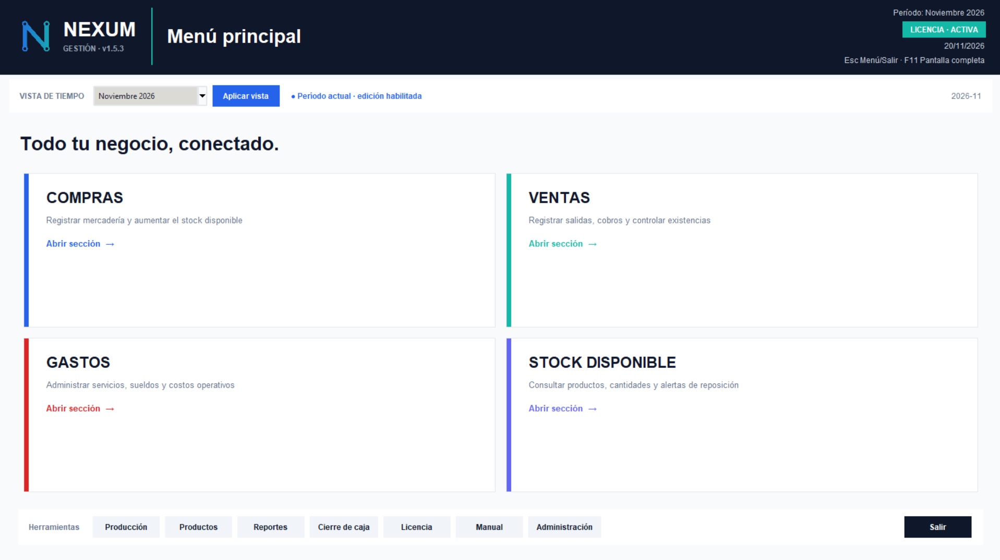

PROYECTO FREELANCE
Nexum Gestión
Aplicación de escritorio que reúne compras, ventas, gastos, inventario, producción, caja y reportes. Incluye un sistema de licencias y un instalador para Windows.


PORTAFOLIO PERSONAL
Desarrollador junior · Python y SQL
Soy técnico en Tecnologías de Programación. Creador de Nexum Gestión, una aplicación de escritorio para la gestión comercial.
PROYECTO FREELANCE
Aplicación de escritorio que reúne compras, ventas, gastos, inventario, producción, caja y reportes. Incluye un sistema de licencias y un instalador para Windows.

TECNOLOGÍAS
CURRÍCULUM
Desarrollador junior y creador de Nexum Gestión. Busco oportunidades de trabajo remoto desde Argentina.
Universidad Provincial del Sudoeste (UPSO)
Instituto San José, Coronel Dorrego · Egreso 2022
CONTACTO
Estoy en Coronel Dorrego, Buenos Aires, Argentina. Si tenés una oportunidad remota en desarrollo o datos, podés escribirme por LinkedIn.
Abrir LinkedIn